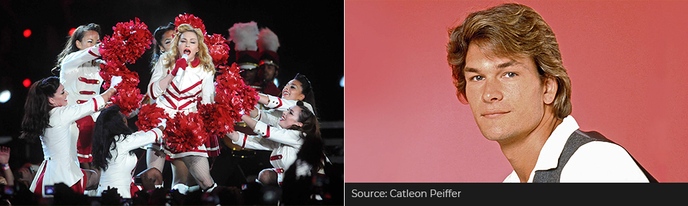
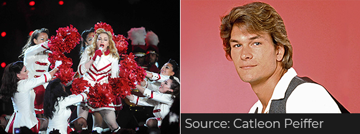
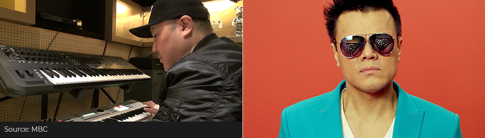
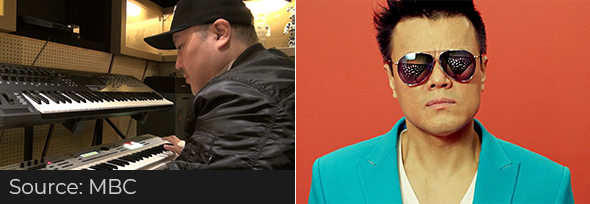

와 제 롤모델이 잡스에요!!! 아이폰 첫 출시되고 나서부터 계속 아이폰 쓰고 있는데 잡스가 너무 그리워요ㅠㅠ 지금은 돈만 벌려고 하는 것 같아서 디자인 발전도 없고ㅠㅠ와 제 롤모델이 잡스에요!!! 아이폰 첫 출시되고 나서부터 계속 아이폰 쓰고 있는데 잡스가 너무 그리워요ㅠㅠ 지금은 돈만 벌려고 하는 것 같아서 디자인 발전도 없고ㅠㅠ와 제 롤모델이 잡스에요!!! 아이폰 첫 출시되고 나서부터 계속 아이폰 쓰고 있는데 잡스가 너무 그리워요ㅠㅠ 지금은 돈만 벌려고 하는 것 같아서 디자인 발전도 없고ㅠㅠ와 제 롤모델이 잡스에요!!! 아이폰 첫 출시되고 나서부터 계속 아이폰 쓰고 있는데 잡스가 너무 그리워요ㅠㅠ 지금은 돈만 벌려고 하는 것 같아서 디자인 발전도 없고ㅠㅠ와 제 롤모델이 잡스에요!!! 아이폰 첫 출시되고 나서부터 계속 아이폰 쓰고 있는데 잡스가 너무 그리워요ㅠㅠ 지금은 돈만 벌려고 하는 것 같아서 디자인 발전도 없고ㅠㅠ
Cultural Odyssey
Why Music and Fashion Have Fallen for the 80s Again
Why Music and Fashion Have Fallen for the 80s Again

By Tim Alper(Journalist)
The 1970s were dubbed “the decade that style forgot.” But if you lived through the 1980s – like me – you will certainly never forget the fashions that dominated the era.
The most noteworthy celebrities of the day, such as Grace Jones, Joan Collins, Madonna, Don Johnson and Patrick Swayze, rocked all sorts of outlandish attire. With armfuls of bangles, mile-wide shoulder pads and oversized earrings, they made an indelible mark on world fashion. This was the era when anyone who was anyone was sure to take to the streets sporting eclectic combinations of spandex, fingerless gloves, headbands, parachute pants, bright neon colors and leg warmers.
 In the music studio, synthesizers and drum machines replaced analog instruments, creating innovative digital soundscapes the likes of which listeners had never experienced before.
All this bright clothing and computerized music led many to feel that the future had finally arrived.
Now, some 30+ years on, the fashion and music of the 1980s continues to suck scores of designers and producers into its strange but appealing web. It was a decade where loudness and extravagance were the name of the game – and when it comes to making music and clothes, few can resist the allure of such opulent themes.
In March this year, New York Times fashion critic Vanessa Friedman wrote that the 80s style revival “has now reached critical mass.”
Creative types are thus turning the clock back this year more than ever, seeking inspiration from the music, movies and fashion items of three decades ago.
Senational Sounds
In Korea, K-pop stylists and producers are increasingly finding themselves diving back into the rich pool of 80s inspiration.
Many of the country’s most influential producers – the likes of Shinsadong Tiger, Brave Brothers, Park Jin-young (JYP) and Sweetune – are either 80s babies or grew up listening to the sounds of this influential decade. Synthesizer sounds and 808 beats are now the order of the day, and K-pop stylists are pairing this with throwback outfits that hark back to the Eighties. Recent releases like EXID’s “Lady” and Triple H’s “Retro Future” have blended classic sounds with outfits and accessories to create audio-visual performances that would not have looked out of place on a stage back in 1988.
 Elsewhere, 80s music has found a niche in the contemporary underground. Synthwave, Retrowave and Vaporwave are three new music genres that are winning adherents. The latter sees producers chop and skew forgotten 1980s hits, adding a unique modern twist and contemporary textures. Synthwave and Retrowave producers such as The Midnight, Droid Bishop and Robert Parker seek to recreate the 1980s sound using a mix of modern computer software and classic 80s hardware.
Just as popular is the so-called “80s remix” phenomenon – a trend whereby modern, avant-garde bedroom producers like Initial Talk upload adventurous, synth-heavy reworkings of contemporary chart hits to video- and audio-sharing sites like YouTube and Soundcloud.
Opulent Look
Beauticians, too, are looking to re-incorporate Eighties trends in their modern looks. The well-heeled in London, Paris, New York and Tokyo are sporting bright blush, not-so-subtle eye shadow and neon nail colors. Hair designers are also re-discovering 1980s stylings, with asymmetric cuts and side ponytails making a comeback.
Even big fashion houses are getting in on the act. The likes of Gucci and Saint Laurent are now producing outfits that could have graced catwalks and movie screens in the mid-1980s – with super-broad shoulder pads and New Romantic-style ruffles.
Whether you are happy to revisit the era or are a millennial captivated by the decade’s far-out vision of the future, the 80s revival has the power to captivate 2018’s most discerning fashion and music fans.


By Tim Alper(Journalist)
Tim Alper is a British journalist who has lived in Seoul for 11 years. He has contributed to publications such as The Guardian, The Jewish Chronicle, Joongang Ilbo, Weekly Chosun and Korean Air’s Morning Calm. He is also the author of the book Bananas & Couscous and the co-author of Have Fork, Will Travel.
-
Great
322
-
Like
322
-
Sad
322
-
So-so
322
-
Angry
322